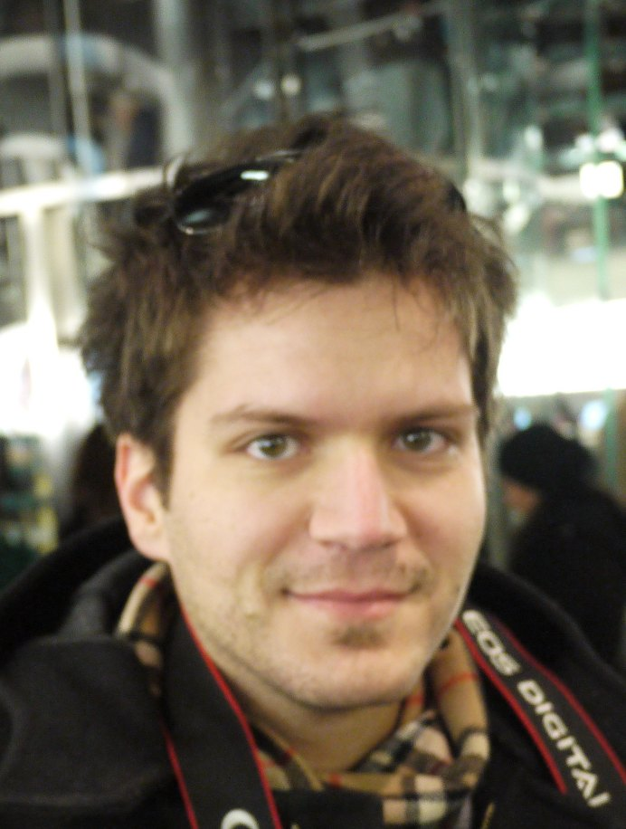

Georgios Giannikis
Dr. Sc. ETH Zurich
Msc. ETH Zurich
Dipl. Ing. ECE Patras
Work Experience
I am a principal member of technical staff in Oracle Labs since 2014, working on project RAPID. Project RAPID involves the design and implementation of both software and hardware components in order to improve the performance and energy efficiency of database processing systems. The goal of the project is better performance and lower energy consumption by at least one order of magnitude over today's solutions. As part of RAPID, I worked on the software side, designing and implementing high performance algorithms for efficient data processing.I received my PhD from ETH Zurich in June 2014. During my PhD studies, I was part of the Systems Group working under the supervision of Prof. Gustavo Alonso and Prof. Donald Kossmann. The main topic of my PhD was work sharing data processing systems. During my PhD I developed from scratch a fully blown database system, SharedDB. This includes a data storage layer, a query processing engine including all SQL defined operators, a transactional layer with ACID guarantees and a global query optimizer. The overall system has a 2x to 5x better performance compared to popular, commercial database systems, while running the full set of well known benchmarks (i.e. TPC-H, TPC-W, TPC-C).
Prior to becoming a PhD student, I received my Msc on Computer Science from ETH Zurich in 2009. My master thesis was part of the implementation of a distributed main-memory data management system. In 2006 I received my Diploma on Electrical and Computer Engineering from University of Patras, Greece.
Publications
-
MQJoin: Efficient Shared Execution of Main-Memory Joins
Darko Makreshanski, Georgios Giannikis, Gustavo Alonso, Donald Kossmann.
VLDB 2016, New Delhi, India.
PVLDB 9(6):480-491, 2016 -
Shared Workload Optimization
Georgios Giannikis, Darko Makreshanski, Gustavo Alonso, Donald Kossmann.
VLDB 2014, Hangzhou, China.
PVLDB 7(6):429-440, 2014 -
Work Sharing Data Processing Systems
Georgios Gianniks.
PhD Thesis, June 2014. -
Workload optimization using SharedDB [Demo Paper]
Georgios Giannikis, Darko Makreshanski, Gustavo Alonso, Donald Kossmann.
SIGMOD 2013, New York, USA.
2013 ACM SIGMOD Conference
-
Why Execute One Query, when you can Execute Thousands [Demo / Poster]
Georgios Giannikis, Darko Makreshanski, Gustavo Alonso, Donald Kossmann.
EuroSYS 2013, Prague, Czech Republic.
2013 ACM SIGOPS/EuroSys Conference -
SharedDB: Killing One Thousand Queries With One Stone.
Georgios Giannikis, Gustavo Alonso, Donald Kossmann.
VLDB 2012, Istanbul, Turkey.
PVLDB 5(6):526-537, 2012. -
Crescando [Demo Paper]
Georgios Giannikis, Philipp Unterbrunner, Jeremy Meyer, Gustavo Alonso, Dietmar Fauser, Donald Kossman.
Indianapolis, USA, 2010.
2010 ACM SIGMOD/PODS Conference -
Daedalus, a distributed Crescando system
Georgios Giannikis
Master Thesis, April 2009. -
Predictable Performance for Unpredictable Workloads [Slides]
Philipp Unterbrunner, Georgios Giannikis, Gustavo Alonso, Dietmar Fauser, Donald Kossmann.
VLDB 2009, Lyon, France.
PVLDB 2(1):706-717, 2009
Patents
-
United Stated Patent and Trademark Office, US/2012/0197868/A1
Continuous Full Scan Data Store Table And Distributed Data Store Featuring Predictable Answer Time For Unpredictable Workload. -
World Intellectual Property Organization, WO/2011/023651
Segmented main-memory stored relational database table system with improved collaborative scan algorithm.
Inventors: Donald Kossmann, Gustavo Alonso, Georgios Giannikis, Philipp Unterbrunner, Dietmar Fauser, Jeremy Meyer and Cedric Florimond.